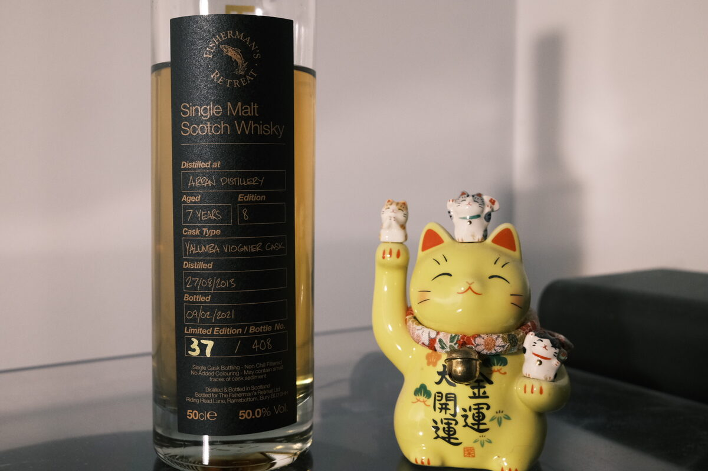

Arran 2013 Fisherman's Retreat 7 years 50% (Yalumba Viognier cask)
A cask you don’t see every day. Distilled by Arran and put into a Viognier cask from Yalumba (South Australia). Bottled by the Fisherman’s Retreat as part of their limited edition series. I do have the cask strength bottling, but today I’m looking at the 50%.
Colour Bright gold.
Nose Acidic: Oranges, lemons, limes. Fresh grapes. Unsurprisingly, white wine. Fruit stems. Sticky fruit buns. Maple syrup. Chai latte. A little volatile for the ABV. Lavender tea. Heady and addictive.
Palate Like the nose – bright, mouth-watering acidity. Lovely. Loaded to brim with citrus and white wine. Some heavy sweetness: a white wine vinegar reduction? Creamy texture, and a malty body reminding you that yes, this is indeed a whisky, not an incredible wine. Leads into milk chocolate. Hints of rosemary and fennel. A little roasted hazelnut.
Finish Fresh. Candied citrus peels. Spices: cloves, fennel, cumin. Not at all hot, extremely long. Winey. A small but noticeable and pleasant amount of tannins.
Comments Cracking. Even though it’s Viognier, this is sort of what I might expect (and honestly, hope) from a masterclass Sauternes cask. Winey, citrusy, creamy malt that packs a punch on account of its youth. I don’t think that’s a fault at all. 90/100.

Posted by Dominic on 29 Apr 2021